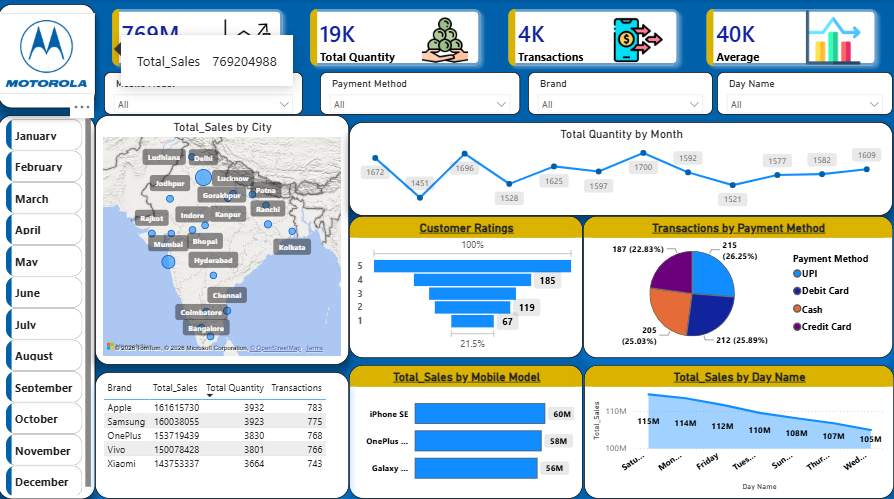

Power BI dashboard preview. Add your screenshot to the repository to display it here.
Mobile Sales Dashboard
An interactive sales dashboard created to explore mobile phone sales performance and present key metrics in an easy-to-understand visual format.
Dashboard features- Sales KPIs, including total sales, quantity, transactions, and average sales.
- City-wise sales distribution.
- Monthly quantity trends and day-wise sales patterns.
- Customer rating and payment method analysis.
- Brand and mobile model comparisons.
To organise sales information into a clear report that helps viewers explore performance across locations, time periods, products, customer ratings, and payment methods.
Tools: Microsoft Power BI
Note: This is a learning project. The observations and conclusions should be added after reviewing the actual report data.